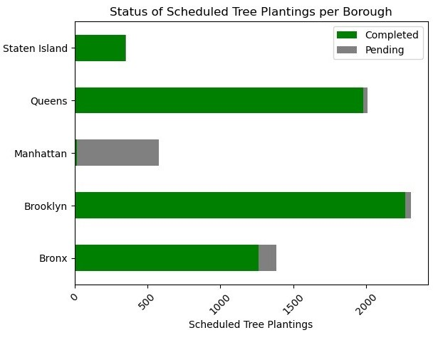
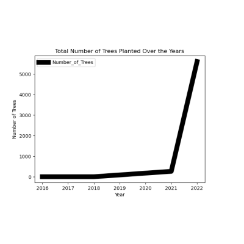
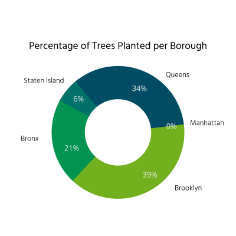

Growing a Greener NYC
In an effort to grow a "greener" New York City, the NYC Department of Parks and Recreation began planting what is referred to as "urban forests" throughout the different boroughs of the city.
The data analyzed is sourced from reports from the New York City Tree Work Hub, which provided data about street tree planting in several different New York neighborhoods. With this data, we wanted to focus on the following information:
- the overall distribution of trees planted in each borough
- the status of whether or not the scheduled planting was completed or still pending
- provide a visualization of boroughs that are greener based on the number of trees in each.
-
Thousands on trees have been planted, or plan to be planted across the city.
Interestingly, nearly all of Manhattan's trees are still pending. -

A clear effort has been made to plant more trees overall.
The sharp increase in the recent year is particularly notable. -
Brooklyn and Queens account for the majority of trees planted so far, with The Bronx not far behind.
Staten Island and Manhattan, on the other hand, lag behind significantly.
The density of planned or planted trees on the streets of the five boroughs is represented above.
High-density areas are characterized by warm hues of orange and red, while cooler greens and blues represent low-density.
Looking Forward
Street Tree Planting in NYC and other heavily urban areas creates a more liveable environment as planting trees can remove air pollutants, reduce CO2 emissions and keep the city cooler during the summer. Based on the analysis, the implementation of planting a considerable number of trees (over 6,000!) in NYC was not only a relatively quick one but also effective, as we note that the status of the majority of tree plantings have been successfully executed.
On the other hand, it also raises questions about why, for instance, areas like Manhattan might be more resistant to this greener implementation. Perhaps there are certain areas that might be too urban to accommodate a greener environment.
A secondary exploration of how these newly planted trees might improve or change urban life can also be useful in determining whether or not city governments should invest in these types of greener programs. These are questions for future projects that might want to explore these factors on a deeper level.